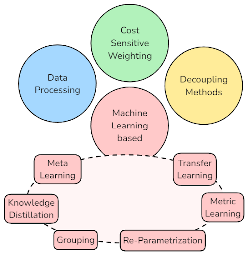
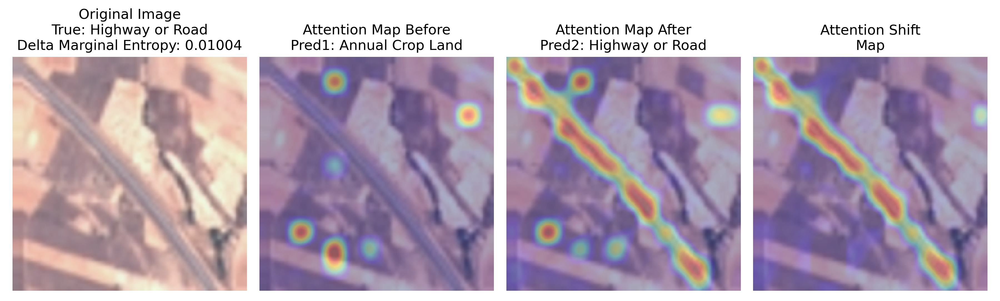
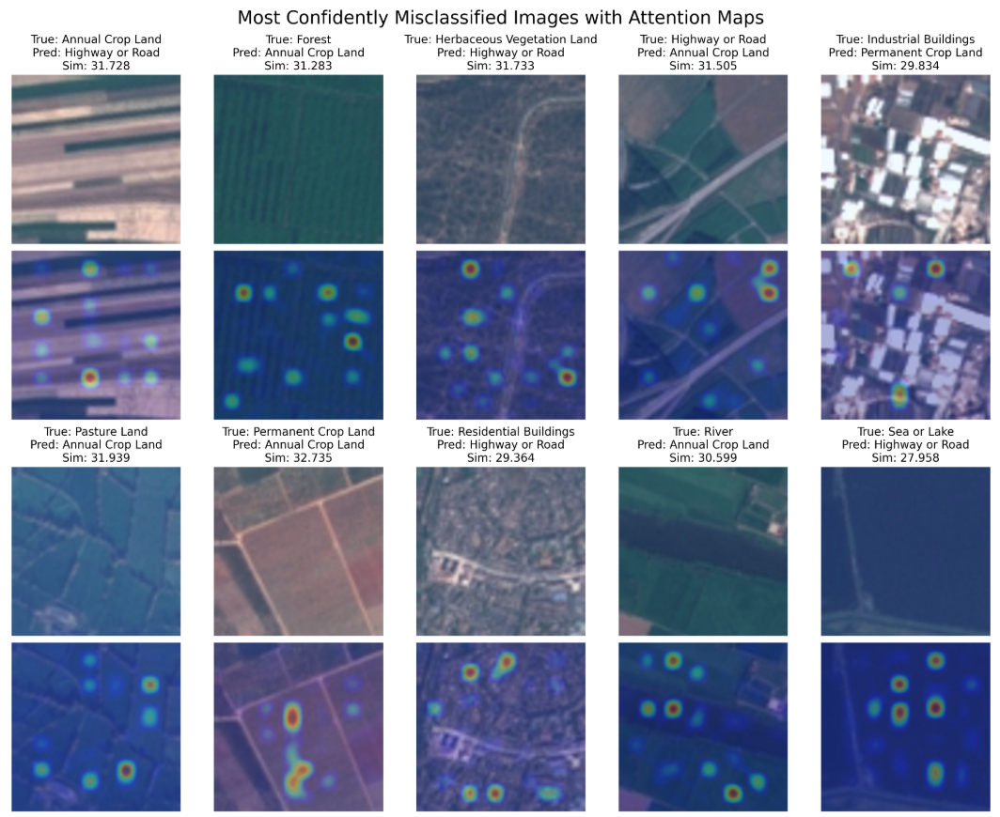
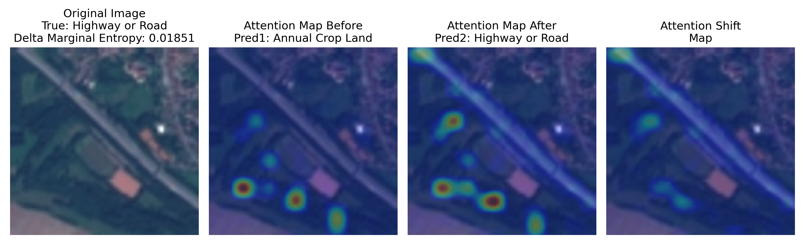
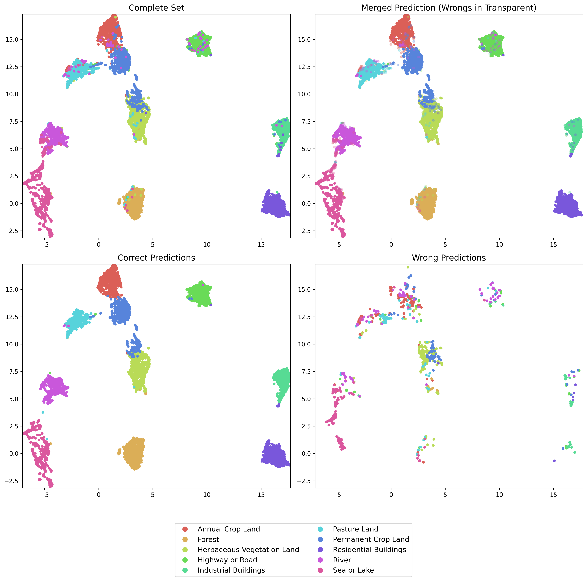
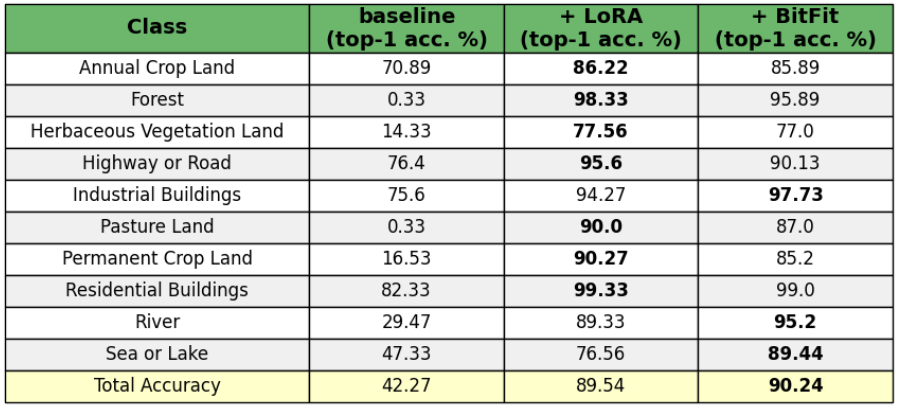
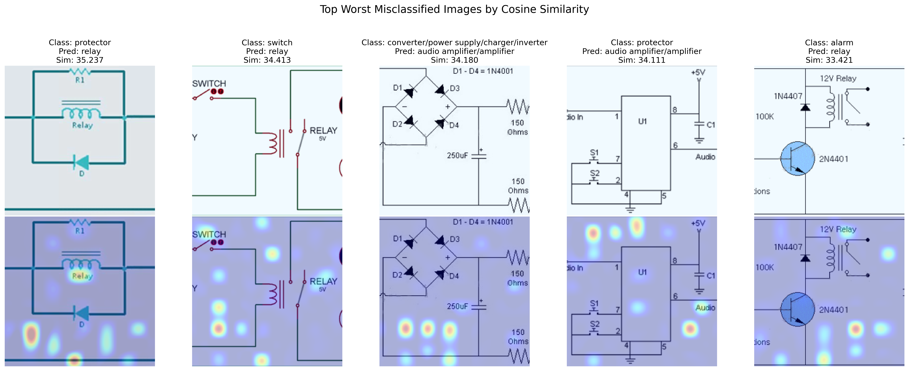
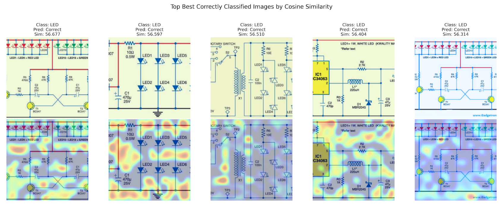
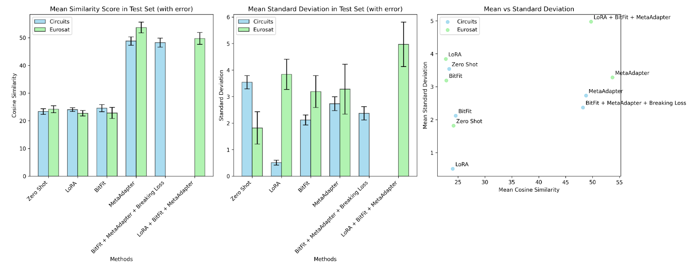

The Problem
Real-world datasets often exhibit a long-tailed distribution where a few classes (head classes) are well-represented, while the majority (tail classes) lack sufficient examples. This imbalance creates challenges for machine learning models, which struggle to generalize effectively across all classes. The issue becomes more pronounced in low-resource scenarios, where collecting additional data is impractical. Vision-Language Models like CLIP, while powerful, face difficulties in these settings due to biases and their reliance on extensive pre-trained datasets.
Methodology
This project began with a comprehensive literature review, categorizing existing techniques to address long-tailed data distributions into four main approaches:

From those categories, 4 relevant techniques were implemented and selected to perform our study:
Each method was implemented and evaluated individually and in combination, focusing on their ability to improve classification performance on long-tailed datasets. Challenging datasets like EuroSAT and Circuit-Diagrams were used to test the methods under real-world conditions.
Experiments
The experiments were designed to assess model performance, particularly in failure cases. Key steps included:
- Applying methods to a few-shot learning setup using CLIP.
- Evaluating results using metrics such as accuracy, cluster separability (Silhouette Score), and confusion matrices.
- Visualizing model behavior extracting attention maps and inspecting UMAP projections.
ex: 
Analysis: EuroSAT
The EuroSAT dataset, which consists of satellite imagery for land use and cover classification, was chosen for its long-tailed yet structured nature. The baseline zero-shot CLIP configuration demonstrated noticeable strengths for certain classes, such as Annual Crop Land and Highway or Road, due to distinct visual patterns.
More interesting is the visualization of failure cases, which we categorized into two main patterns:
- Presence of significant patterns: For instance, straight lines make the model tilt towards predicting the class in which such geometric features are present. In the top-left image, we have a sample of Annual Crop Land presenting a "striped" pattern, which leads to misclassification with Highway or Road. The same happens for image 3.
- Struggle in identifying the image's subject: There are samples (top-right, for instance) in which there are sub-regions presenting other classes, which drags the model prediction and avoids the main component of the image.
- An intrinsic similarity between the two classes: For example, mistaking Permanent Crop Land with Annual Crop Land.

Given this context, the primary issue appears to be related to attention. Indeed, adding LoRA to the base model significantly improves performance. Semantically, the attention maps are now much richer:

From a 2D projection perspective, not only are the clusters more separable, but they are also semantically richer. For example, it's noticeable that clusters driven by semantics, such as sea or lake being close to rivers, and different types of land being grouped together, emerge clearly.

In addition to this, extending the base CLIP model with BitFit also leads to a significant performance improvement. Compared to LoRA, the classification accuracy improvement is especially noticeable for classes such as "Sea or Lake" and "River." We hypothesize that BitFit provides a more comprehensive global understanding of the image, whereas LoRA excels at recognizing fine-grained details. This distinction makes sense given that, in our implementation, LoRA is applied only to the Residual attention blocks of both CLIP's encoders, while BitFit is spread across the entire model, tuning the bias term for each layer.

We also experimented with combining both methods, hoping to achieve a model that performs well on both large-scale details and fine-grained features. However, the result was more of an average of the two characteristics, with the model attending to fine details, but not as much as when LoRA was applied alone.
Testing the Meta-Adapter in combination with both LoRA and BitFit produced our best-performing model on EuroSAT, achieving 90.95% accuracy. On the other hand, testing the Meta-Adapter alone resulted in underwhelming performance (around 68% accuracy), which aligns with findings in the associated paper, although it still outperforms the baseline. Its main drawback is the intrinsic need to select a support set of images, which can lead to time-wasting or suboptimal choices.
Analysis: Circuit Diagrams
The Circuit Diagrams dataset, recently introduced in this paper, is a collection of labeled images used for classifying various types of circuit diagrams. These diagrams represent different electrical components and their interconnections, making them highly structured yet visually diverse. The dataset presents unique challenges, such as variations in diagram layout, symbol orientation, and component grouping. To effectively understand the intricacies of this dataset, models must accurately recognize both individual components and the relationships between them.
This dataset proved particularly challenging for CLIP, as the base model likely has little to no prior knowledge of such structures, making it an interesting case to study its behavior.
Starting with the baseline model, predictions were quite messy, with an overall accuracy of only 12.4%. The main component consistently detected was the text information present in the images, which is a known problem for CLIP.

The Circuit Diagrams test set is highly imbalanced, with most classes having only a few samples (around 5 to 10), while a few classes dominate the majority of the test set. Applying LoRA exhibited an unusual behavior: the model collapsed to predict the majority class, still achieving only 18% accuracy. This was unexpected, as the model was trained in a few-shot setting, which should have prevented such behavior by ensuring a fixed number of samples per class. It is possible that the majority class, "converter/power supply/charger/inverter," contains visual features that are particularly easy for the model to identify, though we couldn't fully explain this given our limited background in electronics.
On the other hand, the application of BitFit enhanced CLIP’s tendency to focus on textual information in the images without causing the collapse behavior seen with LoRA. This was particularly interesting, as it demonstrated BitFit’s ability to leverage the original model's knowledge, rather than optimizing parameters for a specific task. The bias towards text in images became much stronger with this approach.
Our best-performing model configuration (achieving 17.25% accuracy) was obtained through a combination of methods, specifically BitFit, Meta-Adapter, and label preserving/breaking augmentations.

The attention maps clearly show a tendency for the model to avoid the circuit structure and focus instead on blank areas of the images.
Analysis: Meta-Adapter and CLIP Modality Gap
When applying Meta-Adapter either alone or in combination with other methods, we noticed that the model's similarity scores between modalities were much higher than usual. This led us to ask: Does this Meta-Learning strategy also reduce the gap between the text and vision modalities?

The answer to this question is "possibly." While the similarity scores are significantly higher, the standard deviation also increases by a few points. This suggests that further investigation is needed to better understand this behavior, ideally using additional datasets.
Results
The results of applying various methods to the EuroSAT and Circuit Diagrams datasets revealed key insights into model behavior and performance.
For EuroSAT, the baseline CLIP model initially struggled with low accuracy due to the challenge of handling satellite imagery with complex land classifications. However, after incorporating LoRA, a significant improvement was observed, both in terms of cluster separability and the richness of the attention maps. The addition of BitFit further enhanced performance, especially in classes like "Sea or Lake" and "River," where a global understanding of the image was crucial.
Combining LoRA, BitFit, and Meta-Adapter yielded the best results, with the model achieving an impressive 90.95% accuracy. This configuration outperformed the individual methods, highlighting the value of a multi-strategy approach.
For the Circuit Diagrams dataset, the CLIP model initially faced difficulties due to the highly structured yet visually diverse nature of circuit diagrams, especially with text-heavy images. LoRA caused the model to collapse on the majority class, while BitFit showed more balanced performance by leveraging the model's existing knowledge. The best configuration for Circuit Diagrams was obtained by combining BitFit, Meta-Adapter, and label preserving/breaking augmentations, reaching 17.25% accuracy.
The attention maps from the best model configurations in both datasets displayed clear tendencies towards focusing on certain image features. In EuroSAT, the model correctly identified land types and geographical features, while in Circuit Diagrams, the model often ignored the circuit structure, focusing instead on blank spaces.